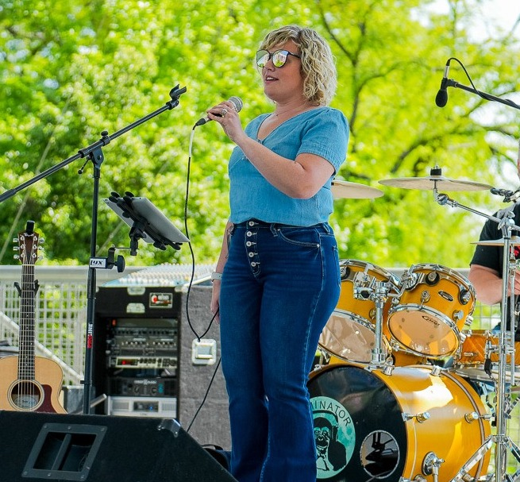
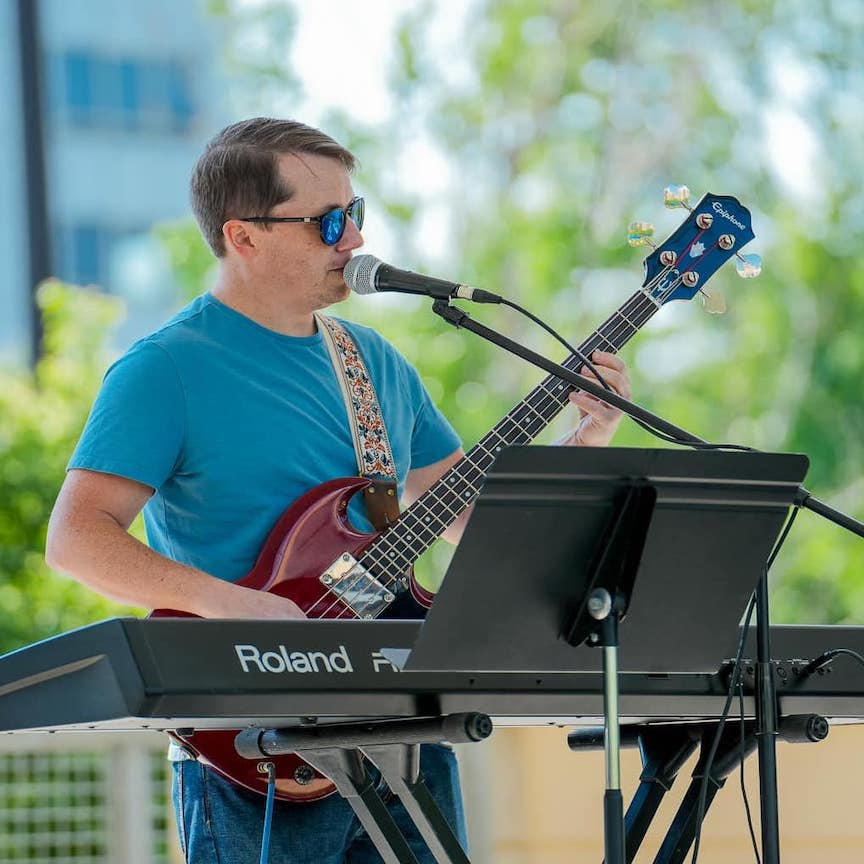
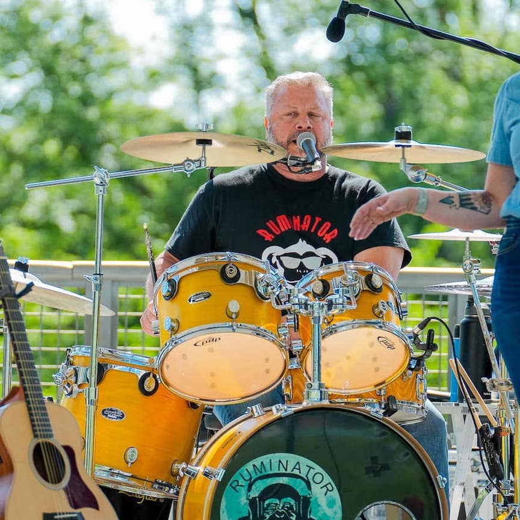

A collaboration of artists performing all your favorites from a variety of musical influences and genres. If you love Classic Rock, Country, Southern Rock from 60's thru today, you will love Ruminator! "Think about it!"
MEET THE BAND!

Jenna Brookens
Jenna is a mild mannered gal by day, brings the cutting edge down and dirty country and rock vocal leads the likes of Joplin and Gretchen Wilson.

Justin Brookens
Justin brings the smooth steady pulse on the bass and adds much to the vocal mix including some top-shelf falsetto and straight up great leads and harmony!

Sean Stewart
Hanging out in the back, Sean has been drumming since his youth. You can hear him rockin the beat, adding harmonies and leading some of your favorites as well. A lifetime Lincolnite, Sean enjoys all types of music, hunting, and spending time with his family!
Malachi Million
Having played guitar since 14, Dr. Malachi brings a plethora of experience from playing in jazz ensembles, performing solo, guitar ensembles, metal, funk, blues bands and worship arts. He's a million dollar man joining in our Ruminator band.
Photos


Contact
Want to learn more about Ruminator, their music, and their available dates? Don't hesitate to get in touch!
Lincoln, NEEmail: Ruminatorsband@gmail.com